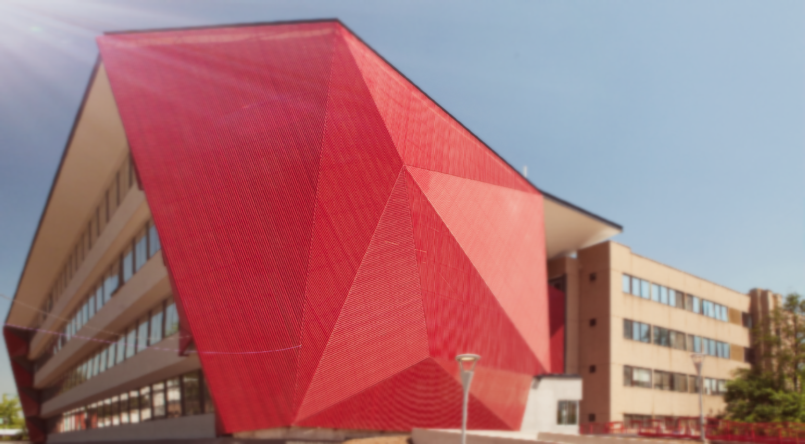

Juan Carlos Castillo

PhD Sociology, Humboldt University - Berlin


Latest papers & projects
En una región en vías de desarrollo y altamente desigual como América Latina, resulta trascendental la comprensión de los determinantes que afectan el acuerdo de las personas con la redistribución de recursos desde el estado. Una serie de teorías centradas en el autointerés han establecido continuamente un vínculo negativo entre el ingreso que tienen las personas y su apoyo hacia la disminución de desigualdades vía redistribución. A pesar de ello, la evidencia es escasa y a veces contradictoria, mientras que su estudio en Latinoamérica resulta casi inexistente. Utilizando datos de la Encuesta LAPOP entre los años 2008 y 2014 esta investigación busca dar cuenta de la relación entre autointerés, desigualdad y redistribución en contextos altamente desiguales. Para ello, por primera vez se considera una dimensión longitudinal abarcando desde 2008 a 2014, considerando el efecto del cambio en los niveles de desigualdad mediante el uso de modelos híbridos de regresión multinivel. Contrastando con la evidencia de estudios realizados en otras regiones, existe poca evidencia en América Latina para la hipótesis del autointerés, donde diferencias de status no lograrían constituirse como un determinante esencial sobre las preferencias redistributivas. A la luz de los resultados, se establecen comparaciones con los hallazgos de investigaciones previas en países desarrollados, discutiéndose la aplicación de teorías racionalistas en materia de justicia y solidaridad social dentro de la región.
Breznau, N., Rinke, E., Wuttke, A., Adem, M., Adriaans, J., Alvarez-Benjumea, A., … Castillo, JC. … Żółtak, T. (2019, January 26).
In an era of mass migration, social scientists, populist parties and social movements raise concerns over the future of immigration-destination societies. What impacts does this have on policy and social solidarity? Comparative cross-national research, relying mostly on secondary data, has findings in different directions. There is a threat of selective model reporting and lack of replicability. The heterogeneity of countries obscures attempts to clearly define data-generating models. P-hacking and HARKing lurk among standard research practices in this area. This project employs crowdsourcing to address these issues. It draws on replication, deliberation, meta-analysis and harnessing the power of many minds at once. The Crowdsourced Replication Initiative carries two main goals, (a) to better investigate the linkage between immigration and social policy preferences across countries, and (b) to develop crowdsourcing as a social science method. The Executive Report provides short reviews of the area of social policy preferences and immigration, and the methods and impetus behind crowdsourcing plus a description of the entire project. Three main areas of findings will appear in three papers, that are registered as PAPs or in process.
(see more in Research)